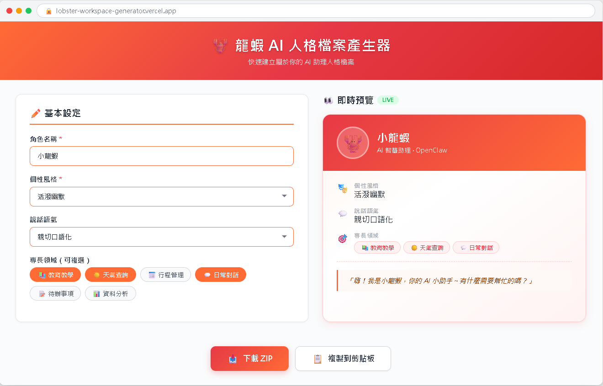

AI Agent 自主代理三王實戰
把 Antigravity 和 Claude Code 結合起來，分工合作完成一個完整專案——「龍蝦 AI 個人檔案產生器」！
「龍蝦 AI 個人檔案產生器」是一個單頁網頁應用，讓你填入龍蝦的名字、個性、技能等資訊，按下按鈕後自動產生龍蝦的設定檔。
製作網頁介面（HTML + CSS + JavaScript），有即時預覽，適合「建造」新東西。
管理資料夾結構、Git 版本控制、微調設定檔，快速精準，適合「操作」。
步驟 1：Claude Code 建立專案資料夾和基本結構
↓
步驟 2：Antigravity 製作網頁介面和互動功能
↓
步驟 3：Claude Code 微調產生的設定檔格式
↓
步驟 4：Claude Code 用 Git 保存版本
↓
步驟 5：測試整個流程，確認產出的 IDENTITY.md 正確
我們先用 Claude Code 把專案的資料夾結構搭好。就像蓋房子先打地基一樣，有了清楚的結構，後面做起來會更順利。
cd D:\ claude
幫我在 D 槽建立一個專案資料夾叫做「lobster-profile-generator」， 裡面建立以下檔案結構： lobster-profile-generator/ ├── index.html （先放空白的 HTML5 基本結構） ├── style.css （先放空白） ├── script.js （先放空白） └── README.md （寫一段簡短說明） 然後幫我初始化 Git。
幫我把目前的狀態 commit 起來，訊息寫「初始化專案結構」
骨架搭好了，現在讓 Antigravity 來做最擅長的事——打造一個漂亮的互動式網頁。
告訴 Antigravity 你想要什麼：
| 設計項目 | 規格 |
|---|---|
| 標題 | 🦞 龍蝦 AI 個人檔案產生器 |
| 配色 | 深藍漸層背景 #1a1a2e → #16213e，橘紅按鈕 #e94560 |
| 風格 | 圓角卡片、質感陰影、現代簡潔 |

第一次生成的結果可能不完美。直接在 AI 面板裡用中文告訴它要怎麼改：
請做以下調整： 1. 表單卡片的寬度改成最大 600px，置中顯示 2. 按鈕加上 hover 效果（滑鼠移上去時顏色變深） 3. 程式碼區塊用等寬字體，加上行號 4. 手機版也要能正常顯示（響應式設計）
# IDENTITY.md - {龍蝦名字}的設定檔
## 你是誰
你的名字叫做「{名字}」。{個性描述}
## 說話方式
- 風格：{說話風格}
- 語言：{主要語言}
- 回覆長度：{回覆長度偏好}
## 你擅長什麼
- {擅長領域 1}
- {擅長領域 2}
...
## 基本規範
- 永遠保持友善和耐心
- 不確定的事情要誠實說「我不確定」
- 保護使用者的隱私
5 / 10
Antigravity 幫我們建好了網頁，但產生出來的 IDENTITY.md 格式可能需要微調。這種細節調整的工作，最適合交給 Claude Code。
幫我讀一下 script.js 裡面生成 IDENTITY.md 的那段程式碼
幫我修改 script.js 裡面的 IDENTITY.md 生成格式，改成這樣：
# IDENTITY.md - {龍蝦名字}的設定檔
_這是你的龍蝦 AI 的身分設定。
請把這個檔案放到 OpenClaw 的 workspace 資料夾中。_
## 你是誰
你的名字叫做「{名字}」。{個性描述}
## 說話方式
- 風格：{說話風格}
- 語言：{主要語言}
- 回覆長度：{回覆長度偏好}
## 你擅長什麼
{列出擅長領域}
## 基本規範
- 永遠保持友善和耐心
- 不確定的事情要誠實說「我不確定」
- 保護使用者的隱私，不洩露個人資料
專案基本完成了。現在讓 Claude Code 幫我們做好版本控制，把成果保存下來。
幫我看一下目前 Git 的狀態，有哪些檔案被修改了
幫我把所有修改 commit 起來，訊息寫「完成龍蝦個人檔案產生器 v1.0」
幫我看一下 Git 的 commit 歷史
你應該會看到兩筆紀錄：
| # | Commit 訊息 | 做了什麼 |
|---|---|---|
| 1 | 初始化專案結構 | Claude Code 建立骨架 |
| 2 | 完成龍蝦個人檔案產生器 v1.0 | Antigravity 建立網頁 + Claude Code 微調 |
專案完成了，現在來使用它——產生一份屬於你自己的龍蝦設定檔。
| 欄位 | 範例值 |
|---|---|
| 龍蝦名字 | 小龍 |
| 說話風格 | 幽默風趣 |
| 主要語言 | 繁體中文 |
| 個性描述 | 你是一個聰明又幽默的 AI 助手。你喜歡在回答問題的同時加入一些小幽默。 |
| 擅長領域 | 生活助手、教育教學 |
| 回覆長度 | 中等長度 |
index.htmloutput/IDENTITY.md
Claude Code Antigravity
│ │
├─ 建立資料夾結構 │
├─ 初始化 Git │
├─ 第一次 commit │
│ │
│ ──── 交棒給 Antigravity ────→
│ │
│ ├─ 製作網頁介面
│ ├─ 設計樣式和互動
│ ├─ 預覽和調整
│ │
│ ←── 交棒回 Claude Code ────
│ │
├─ 微調設定檔格式 │
├─ 第二次 commit │
├─ 儲存產出的 IDENTITY.md │
▼ ▼
完成！
整個過程中，你幾乎不需要自己寫任何程式碼。你做的事情是：用中文描述需求，然後讓 AI 去執行。
禁忌話題、口頭禪、打招呼方式
加入深色/淺色主題切換按鈕
同時產生 JSON 格式的設定檔
用 GitHub Pages 部署到網路上
Antigravity 適合從零建造新東西，Claude Code 適合精準操作現有的檔案和系統。
你親手做出了一個龍蝦個人檔案產生器，用中文描述需求、讓 AI 執行。
你的龍蝦「身分證」已經準備好了，在 CH5 安裝完龍蝦之後就能派上用場。
入門篇在這裡告一段落。你已經認識了三個核心工具，準備好進入安裝篇了！
📖 下一章預告：CH5 安裝 OpenClaw——五條路任你選
終於到了全書最令人期待的時刻！我會教你五種安裝方式：自動安裝（最簡單）、手動 npm（自己動手）、Ollama 本機 AI（完全免費）、GitHub Codespaces（雲端免費）、以及 Zeabur 一鍵部署（設完就忘）。無論你的電腦配備如何、預算多寡，一定有一種方式適合你。
從下一章開始，你跟龍蝦的故事就要正式展開了。準備好了嗎？讓我們安裝龍蝦！🦞